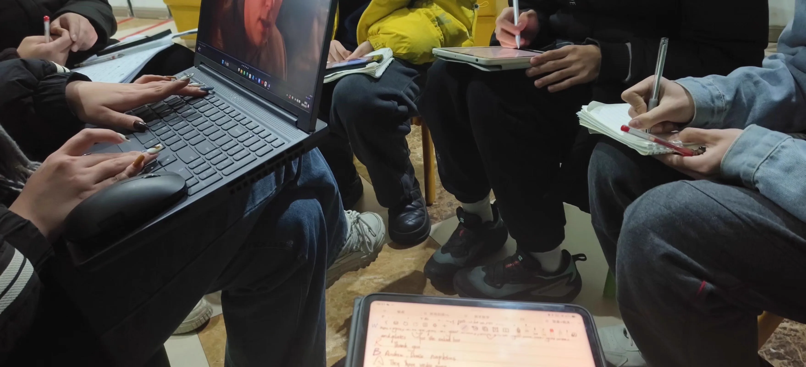
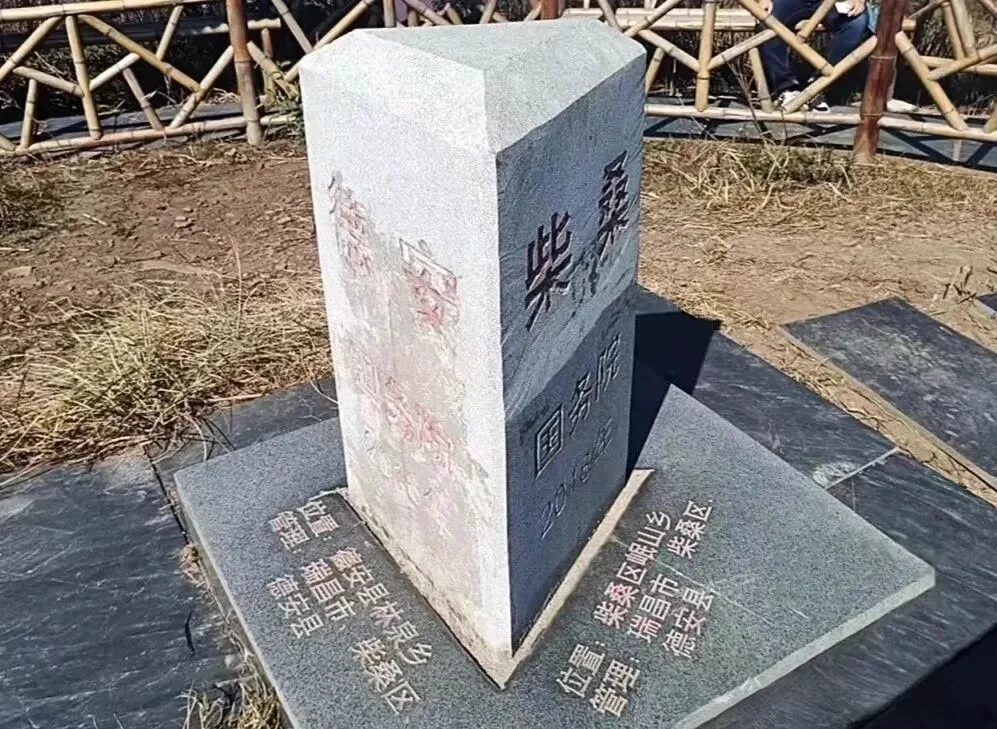

Journal · 2025-01-28
湖北省武汉市
编辑于2025年1月28日 23:34
甲辰龙年，我解锁了一些技能树上的新技能，也获得了一些有生之年的突破。
我实在不能说，自己是个多么牛逼的憨憨，但我打从心底里觉得，这个世界变得越来越有意思了。
这里头最大的原因还是，有一群活泼可爱的小伙伴，愿意纵容我这个憨憨，一点点靠着自己的胡思乱想、胡言乱语去摸索出一套改造世界的系统。
是你们的支持，让我获得了巨大的使命感；是你们的宽容，让我面对任务时不至于太困难；更是你们的反馈，赋予了我一次又一次的多巴胺！
你们的人生或许还在开发中，但你们早就在无形中设计了他人的人生，设计了我的人生，谢谢你们！
愿为江水，与君同行！收起
柴江赣北 : 文案来自于工科生，图片来自于文科生
2025年1月28日 23:33


Edited on Jan 28, 2025 23:34
In the year of the Dragon, I unlocked some new skills on the skill tree and achieved a few once-in-a-lifetime breakthroughs.
I honestly can't claim to be some amazingly awesome goofball, but deep down I feel this world is getting more and more interesting.
The biggest reason is still that a group of lively, lovely friends are willing to indulge this goofball of mine, letting me grope my way, bit by bit, through my wild thoughts and ramblings, toward a system for remaking the world.
It is your support that gave me a tremendous sense of mission; your tolerance that kept tasks from being too hard for me; and above all your feedback that rewarded me with dopamine time and again!
Your lives may still be under development, but you have long been silently designing the lives of others — and mine. Thank you!
May I be the river that flows alongside you! Collapse
柴江赣北 : The copy comes from an engineering student, the photos from a liberal arts student
Jan 28, 2025 23:33
Modifié le 28 janv. 2025 à 23:34
En cette année du Dragon, j'ai débloqué de nouvelles compétences dans mon arbre de talents et réalisé des percées qu'on ne fait qu'une fois dans sa vie.
Je ne peux franchement pas prétendre être un bouffon génial, mais au fond de moi je sens que ce monde devient de plus en plus intéressant.
La raison principale reste qu'un groupe de camarades vivants et adorables accepte de laisser ce bouffon que je suis tâtonner peu à peu, au gré de ses divagations et de ses propos décousus, vers un système pour transformer le monde.
C'est votre soutien qui m'a donné un immense sens de la mission ; votre indulgence qui m'a épargné trop de difficultés face aux tâches ; et surtout vos retours qui m'ont offert de la dopamine encore et encore !
Vos vies sont peut-être encore en cours de développement, mais vous avez depuis longtemps, sans le savoir, dessiné la vie des autres — et la mienne. Merci à vous !
Puissé-je être l'eau du fleuve qui chemine à tes côtés ! Réduire
柴江赣北 : Le texte vient d'un étudiant en ingénierie, les images d'un étudiant en lettres
28 janv. 2025 23:33
Bearbeitet am 28.01.2025 um 23:34
Im Jahr des Drachen habe ich neue Fertigkeiten im Fähigkeitenbaum freigeschaltet und einige Durchbrüche erzielt, die man nur einmal im Leben erlebt.
Ich kann wirklich nicht behaupten, ein toller Trottel zu sein, aber tief im Inneren spüre ich, dass diese Welt immer interessanter wird.
Der größte Grund bleibt, dass eine Gruppe lebhafter, liebenswerter Freunde bereit ist, mich Trottel zu verwöhnen, während ich mich Schritt für Schritt mit meinen wilden Gedanken und wirrem Gerede an ein System zur Umgestaltung der Welt herantaste.
Eure Unterstützung hat mir ein ungeheures Gefühl der Mission geschenkt; eure Nachsicht bewahrte mich davor, dass Aufgaben zu schwer wurden; und vor allem euer Feedback bescherte mir immer wieder Dopamin!
Euer Leben ist vielleicht noch in der Entwicklung, aber ihr habt längst, ohne es zu wissen, das Leben anderer mitgestaltet — und auch meins. Danke euch!
Möge ich das Wasser des Flusses sein, das an deiner Seite fließt! Einklappen
柴江赣北 : Der Text stammt von einem Ingenieursstudenten, die Bilder von einem Geisteswissenschaftler
28.01.2025 23:33